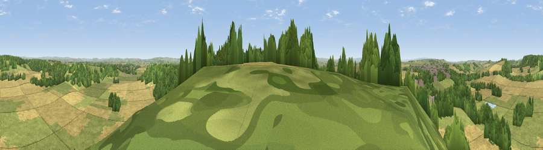

Viewpoint near Somerton
#14953 in England · top 36% of its area beats it · near SomertonThe view, rendered

A 360° render of this exact spot computed from the terrain model, tree cover and land cover — summer colours, afternoon light, calibrated against photographs of famous viewpoints. Real trees, hedges and buildings will differ in detail.
The panorama
Grey silhouette: terrain skyline in each direction (720 bearings, Earth curvature and refraction included). Dashed green: skyline with trees (+15 m) and buildings (+8 m) as obstacles. Blue strip: how far the ground is visible on each bearing.
Where the view opens
Wedge length = distance to the farthest visible ground on that bearing (vegetation-aware). Rings at 10, 25 and 50 km.
What fills the view
44% cropland · 37% grassland · 18% woodland ·
Angular shares of the visible panorama (visual magnitude), not map area. Landscape diversity 0.47 (0–1 Shannon).
Key numbers
More beautiful places nearby
The staircase of upgrades: each row has a higher view potential than everything closer. Driving times are estimates from straight-line distance, calibrated against real road routing — check an actual route before setting out.
| Place | Direction | Drive | Score |
|---|---|---|---|
| Viewpoint near Kingsdon | SSE · 2 km | ~4 min | 67.2 |
| Glastonbury Tor | N · 11 km | ~20 min | 75.8 |
| Socombe Hill | NW · 15 km | ~28 min | 76.4 |
| Viewpoint near Lamyatt | ENE · 18 km | ~31 min | 77.8 |
| Viewpoint near Hewish | SSW · 20 km | ~34 min | 78.5 |
| Lewesdon Hill | SSW · 28 km | ~44 min | 83.3 |
| Viewpoint near West Bagborough | W · 33 km | ~51 min | 84.3 |
| Wills Neck | W · 35 km | ~53 min | 85.7 |
51.04988, -2.70791 · source: screening · position refined by local search. Computed location — check access rights before visiting.